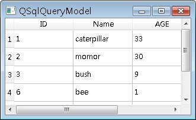

QSqlQueryModel提供可編輯的資料模型，協助您從單一資料表格中讀取或寫入資料，可搭配 View 類別 簡單的達到以圖形元件顯示表格欄位記錄，下面的程式是個簡單的示範：#include <QApplication> QTableView會自動提取QSqlQueryModel的資料，並顯示在表格之中，一個執行的參考畫面如下所示：  如果想要直接使用QSqlQueryModel進行資料查詢，則可以如下： QSqlQueryModel *model = new QSqlQueryModel;
model->setQuery("SELECT * FROM T_USER"); for (int i = 0; i < model->rowCount(); ++i) { QSqlRecord record = model->record(i); int id = record.value("id").toInt(); QString name = record.value("name").toString(); int age = record.value("age").toInt(); cout << id << " " << qPrintable(name) << " " << age << endl; } QSqlQueryModel的rowCount()方法傳回所查詢得到的資料筆數，record()方法指定索引表示要查詢 第幾筆資料，這會傳回一個QSqlRecord物件，您可以使用value()方法指定欄位名稱以取得資料的QVariants物件，並使用toInt ()、toString()等方法轉換為指定的資料型態，value()方法也可以指定數字索引，索引值從0開始，建議採用數字索引，以降低與資料表格的 耦合度，例如： QSqlQueryModel *model = new QSqlQueryModel;
model->setQuery("SELECT * FROM T_USER"); for (int i = 0; i < model->rowCount(); ++i) { QSqlRecord record = model->record(i); int id = record.value(0).toInt(); QString name = record.value(1).toString(); int age = record.value(2).toInt(); cout << id << " " << qPrintable(name) << " " << age << endl; } QSqlQueryModel的setQuery()方法基本上也可以設定INSERT、UPDATE、DELETE等SQL語句，例如以下的程式片段會刪除名稱為"justin"的資料： model->setQuery("DELETE FROM T_USER WHERE name = 'justin'");
QSqlTableModel是QSqlQueryModel的子類別，提供物件導向的方式來對資料庫表格進行存取，透過QSqlTableModel，您可以不用撰寫SQL語句，就可以進行查詢、更新、新增、刪除等動作，例如： QSqlTableModel *model = new QSqlTableModel;
model->setTable("T_USER"); model->setFilter("age >= 30"); model->select(); for (int i = 0; i < model->rowCount(); ++i) { QSqlRecord record = model->record(i); int id = record.value(0).toInt(); QString name = record.value(1).toString(); int age = record.value(2).toInt(); cout << id << " " << qPrintable(name) << " " << age << endl; } 您可以使用setTable()方法指定要查詢的表格，使用setFilter()設定查詢條件，使用select()方法進行SELECT查詢，這相當於使用以下的SQL語句： SELECT * FROM T_USER WHERE age >= 30
如果要更新資料，則可以使用如下，以下取得第一筆資料，並進行更新： QSqlTableModel *model = new QSqlTableModel;
model->setTable("T_USER"); // 先SELECT資料到Model model->select(); // 取得第一筆記錄 QSqlRecord record = model->record(0); // 更新資料記錄 record.setValue("name", "justin"); // 設定Model的第一筆記錄 model->setRecord(0, record); // 記得要submitAll()才會更新至資料庫 model->submitAll(); 也可以直接在QSqlTableModel物件上直接使用setValue()進行更新，例如： QSqlTableModel *model = new QSqlTableModel;
model->setTable("T_USER"); // 先SELECT資料到Model model->select(); // 指定Model中儲存格索引更新資料 model->setData(model->index(0, 1), "caterpillar"); model->setData(model->index(0, 2), 34); // 記得要submitAll()才會更新至資料庫 model->submitAll(); 如果要新增資料，則如下進行： QSqlTableModel *model = new QSqlTableModel;
model->setTable("T_USER"); // 先SELECT資料到Model model->select(); // 只要指定為0即可 int row = 0; // 在Model中新增一列 model->insertRows(row, 1); model->setData(model->index(row, 1), "ww"); model->setData(model->index(row, 2), 10); model->submitAll(); 雖然insertRows()是用來在指定的列（Row）後插入指定的列數，但實際上在QSqlTableModel中，insertRows()被重新定義為只要指定列數為0即可，資料表格的新增資料就一律新增至最後一列。 如果要刪除資料，則使用removeRows()方法，例如： QSqlTableModel *model = new QSqlTableModel;
model->setTable("T_USER"); model->setFilter("name = 'duke'"); // 先SELECT資料到Model model->select(); // 從Model中移除資料 if (model->rowCount() > 0) { model->removeRows(0, model->rowCount()); // 記得要submitAll()才會更新至資料庫 model->submitAll(); } |